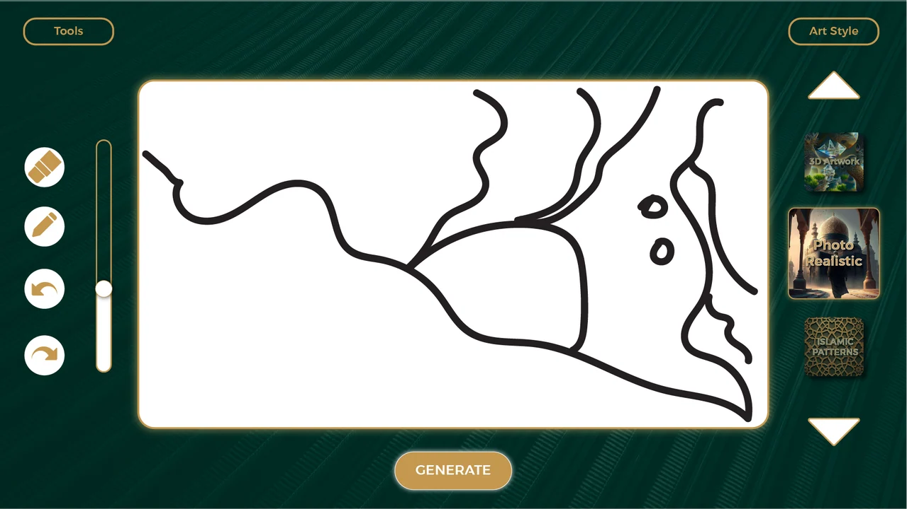
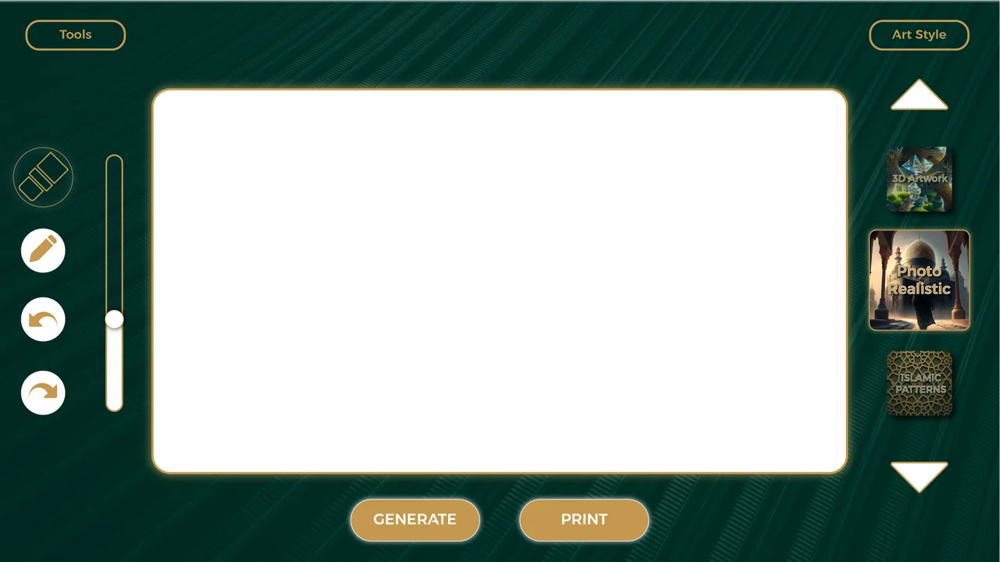

Large central drawing area
The interface uses a green and gold palette around a broad white drawing surface.
Sketching and style selection around one large canvas.
Explore the story
Keep image-making choices accessible without shrinking the drawing surface.
Pencil, eraser and history controls sit left of the canvas; visual styles sit to the right. Empty and sketched variants show the interface around generation and print actions.
The interface uses a green and gold palette around a broad white drawing surface.
Eraser, pencil, undo and redo controls sit to the left; a vertical selection of visual styles sits to the right.
These are interface artwork states, not a recorded demonstration of the generation system.
Explore the complete compositions and interface states. Select any image for a closer look.
02 / PROJECT IMAGES
Select a view to explore.
Green and gold drawing interface with a landscape sketch, drawing tools, visual-style thumbnails and a Generate button.
Empty drawing canvas with tools on the left, style choices on the right, and Generate and Print actions.

Structure, interaction and visual decisions that give the work its character.
RoleConfirm responsibility for interface layout, drawing-tool behavior, style artwork, AI integration and print workflow.
AssetsStyle-preview imagery, icons, fonts and any AI-generated assets need separate provenance. Possession of interface exports does not establish authorship of the application or underlying models.
StatusDraft case study. Two original interface exports reviewed; generation, printing, runtime and delivery unverified.